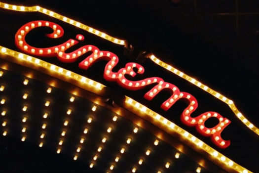

CINE

CONCEPTO
El arte que representa una historia a través de diversas herramientas y técnicas audiovisuales. Y así, logrando trasmitir diversidad de emociones y sentimientos del relato a contar en los materiales audiovisuales.
ETIMOLOGÍA
Etimológicamente, la palabra cinematografía fue un neologismo creado a finales del siglo XIX compuesto a partir de dos palabras griegas. Por un lado κινή (kiné), que significa "movimiento" (ver, entre otras, "cinético", "cinética", "kinesis", "cineteca"); y por otro de γραφóς (grafós). Con ello se intentaba definir el concepto de "imagen en movimiento".
HISTORIA
La historia del cine comienza el 28 de diciembre de 1895, fecha en la que los hermanos Lumière proyectaron públicamente la salida de obreros de una fábrica francesa en Lyon, la demolición de un muro, la llegada de un tren, y un barco saliendo del puerto.
El éxito de este invento fue inmediato, no sólo en Francia, sino también en toda Europa y América del Norte. En un año los hermanos Lumière creaban más de 500 películas, marcadas por la ausencia de actores y los decorados naturales, la brevedad, la ausencia de montaje y la posición fija de la cámara. Pero los espectadores acabaron aburriéndose por lo monótono de las tomas. Y fue George Méliès quien profundizó por primera vez en el hecho de contar historias ficticias y quien comenzó a desarrollar las nuevas técnicas cinematográficas, sobre todo en 1902 con "Viaje a la luna" y en 1904 con "Viaje a través de lo imposible", aplicando la técnica teatral ante la cámara y creando los primeros efectos especiales y la ciencia-ficción filmada.
A partir de entonces la cinematografía no hizo más que mejorar y surgieron grandes directores como Ernst Lubitsch, Alfred Hitchcock, Fritz Lang, o Charles Chaplin que mantuvieron en constante evolución la técnica hasta que en 1927 se estrena la primera película con sonido El cantante de jazz, a partir de la cual el cine tal y como se conocía dejo de existir y se impusieron guiones más complejos que se alejaban de los estereotipados personajes que la época muda había creado.
Fue en ese mismo año 1927 cuando la Paramount Pictures crea la técnica cinematográfica conocida como doblaje. Al cabo de los años la técnica permitió la incorporación del color, llegando en 1935 con "La feria de las vanidades" de Rouben Mamoulian, aunque artísticamente consiguió su máxima plenitud en 1939 con "Lo que el viento se llevó".
El color tardó más en ser adoptado por el cine. El público era relativamente indiferente a la fotografía en color opuestamente al blanco y negro. Pero al mejorar los procesos de registro del color y disminuir los costes frente al blanco y negro, más películas se filmaron en color. Asegurando su lugar en sucesión al cine clásico como por su proximidad al postmodernismo.
Actualmente se presentan numerosas y nuevas técnicas cinematográficas, como lo son las películas de animación realizadas por ordenador, técnica presentada por primera vez en la película Toy Story de 1995, cuya película producida por Pixar, cuya empresa es considerada como una de las mas grandes en especial en el desarrollo de películas de animación por ordenador.